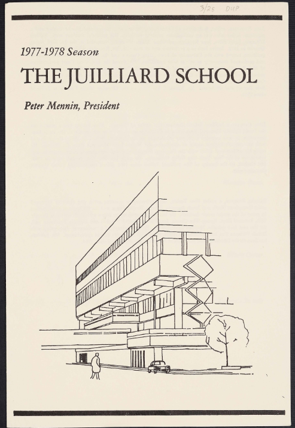
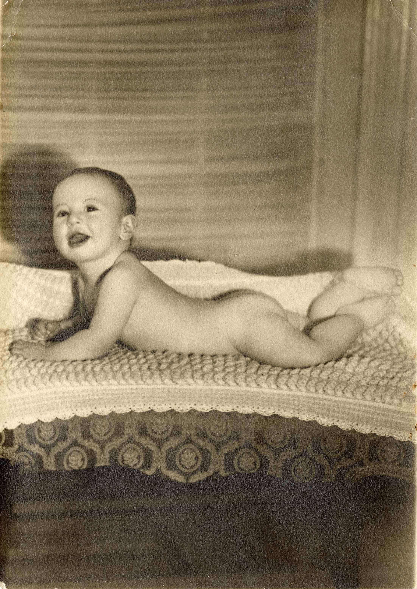
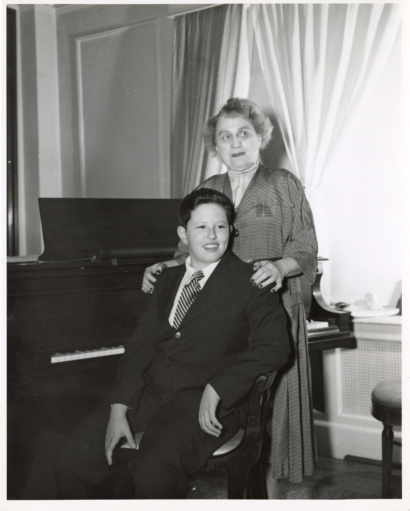
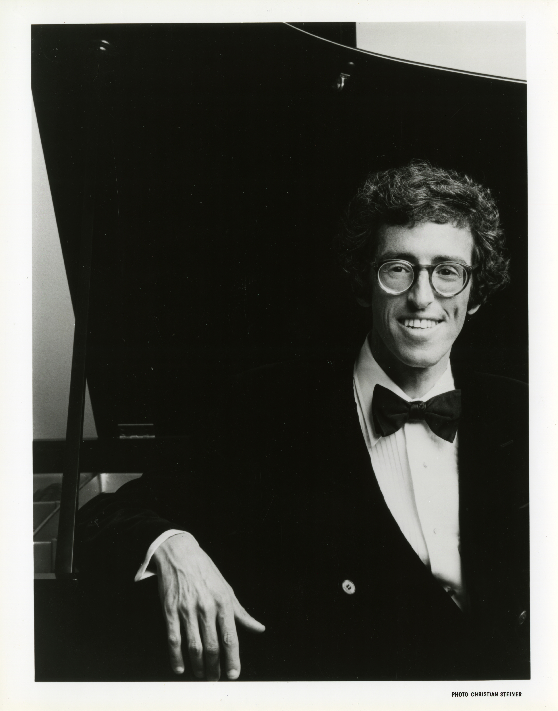

Excerpts from 7 online interviews with Audrey Axinn, Jonathan Feldman, Caren Levine, Anna Marchwińska, Jane Olian & Donna Gill, Speranza Scapucci, and David Zobel in 2024.
Juilliard Concert Programs
Scans of 23 concert programs involving Sam Sanders at Juilliard.

Marcus Thompson, Emanuel Ax, Samuel Sanders, 1982
Photographer unknown, courtesy of the Juilliard Archives. This photo may not be reproduced or republished without permission.
Samuel Sanders: Complete Course Offerings at Juilliard and Peabody
Compiled by Chanda VanderHart, based on archival work by Jeni Dahmus Farah and Elena Versenyi.
Tribute Concert, 14 October 1999
Scan of printed program courtesy of the Juilliard Archives, photo by Peter Schaaf, both used with permission. Neither may be reproduced without explicit permission from all rights holders.
Samuel Sanders as a baby, 1937
Photographer unknown, courtesy of the Juilliard Archives. This photo may not be reproduced or republished without permission.

Young Samuel Sanders with piano teacher Hedwig Rosenthal, ca. 1940s
Photographer unknown, courtesy of the Juilliard Archives. This photo may not be reproduced or republished without permission.

Sam Sanders' 1961 Commencement Program from Juilliard
Courtesy of the Juilliard Archives. This scan may not be reproduced, published, or displayed without permission.
1993 Recital with Robert White
Scan of printed program including extensive program notes by White and Sanders and biographies. Courtesy of the Juilliard Archives; may not be reproduced, published, or displayed without permission.
1998 Recital 'Samuel Sanders and Friends - Reminiscences'
Scan of printed program including reminiscences by Sanders. Courtesy of the Juilliard Archives; may not be reproduced, published, or displayed without permission.
Caren Levine and Samuel Sanders
Sanders' student Caren Levine submitted this snapshot, her last photo with Sanders, taken in July 1998 at the Musicorda Music Festival after a concert. Photographer unknown.
Selected Audio
Link to a selection of commercial albums recorded by Samuel Sanders by Vinyl Me Please.
The Biggest Heart if Not the Best' (1995)
Link to an extensive New York Times article on Sanders by James Barron.
Sam Sanders photo, date unknown
Christian Steiner (photographer), courtesy of the Juilliard Archives. This photo may not be reproduced or republished without written permission from all rights holders.
